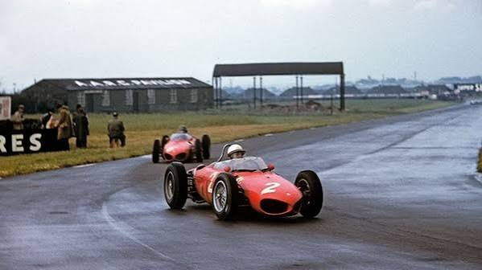

1961
A Ferrari conquistou seu primeiro Campeonato de Construtores com a lendária Ferrari 156, conhecida como Sharknose. Phil Hill conquistou também o título de Pilotos, tornando-se o primeiro norte-americano campeão mundial de F1.
Estatísticas
- 8 corridas
- 5 vitórias
- 14 pódios
- 6 poles
- 40 pontos